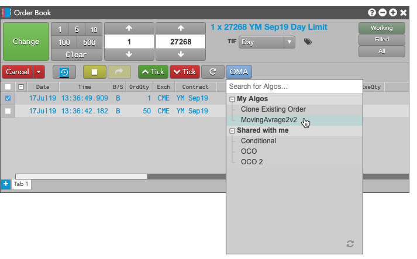
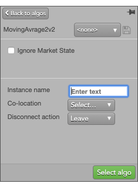
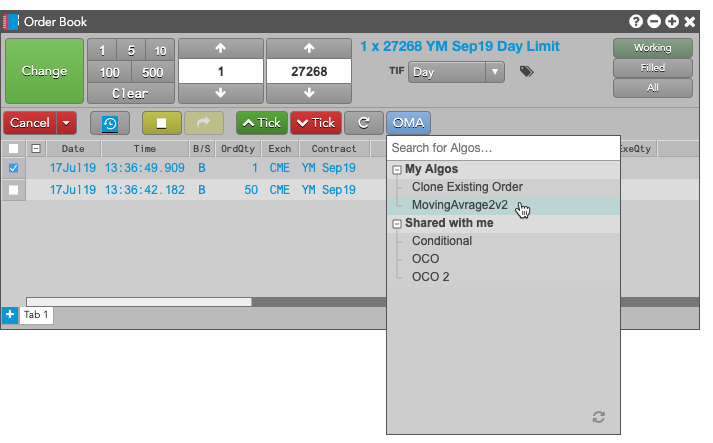
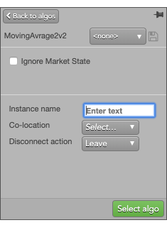
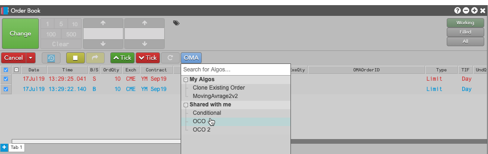
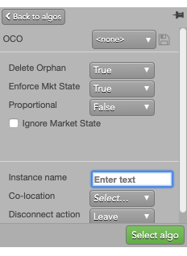
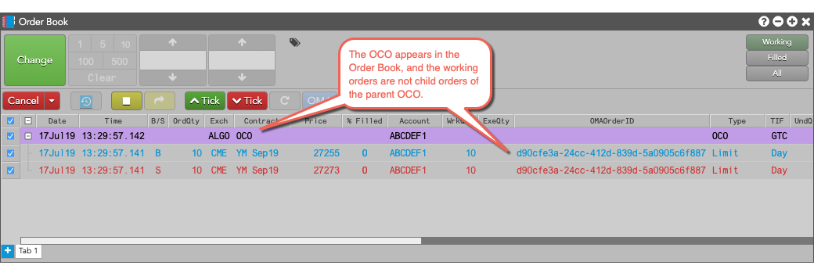

Select the desired order.
Click  , and select the OMA algo to run.
, and select the OMA algo to run.

Enter the information required by the algo, and click .

If you have access to an Order Management Algo (OMA), you can launch it for an order from the Order Book. To launch an algo for an existing order:
Select the desired order.
Click , and select the OMA algo to run.

Enter the information required by the algo, and click .

TT provides you with the ability to select two working orders in the Order Book, and apply an OCO (Order Cancels Order) Order Management Algo (OMA). This allows you to select which child orders you want working in the market as part of an OCO.
Note: The following types of orders cannot be converted to OCOs:
To link two orders as an OCO:
Click , and select the OCO algo from the Shared with me.



